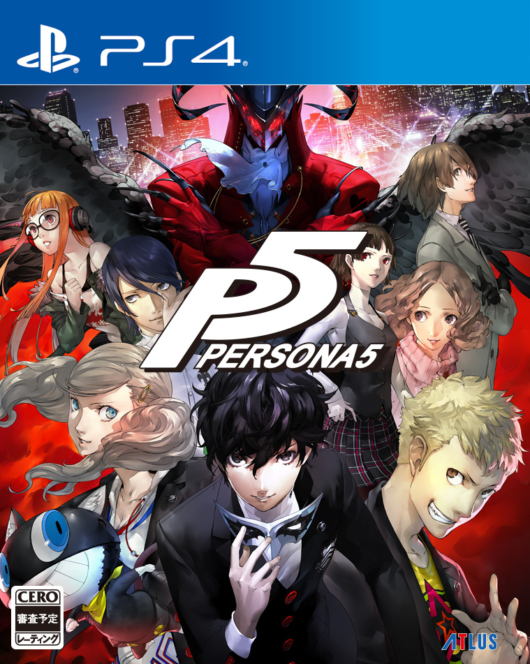
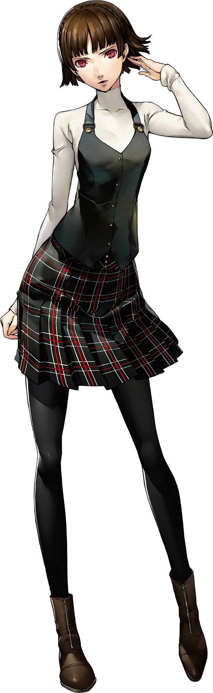
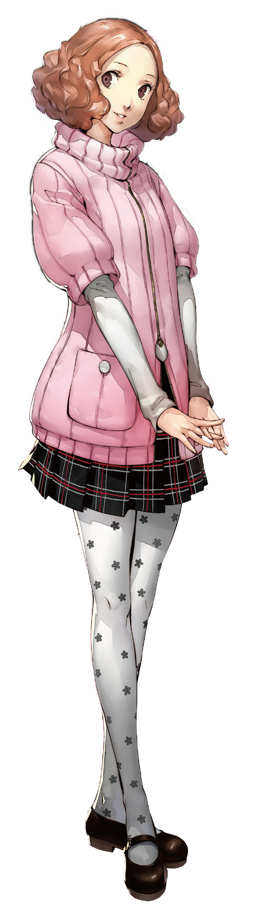

| Persona 5 | |
|---|---|
|  | |
| Nome original: | ペルソナ 5 |
| Ano de lançamento: | 2016 no Japão e 2017 no Ocidente |
| Plataforma(s): | PlayStation 3 e PlayStation 4 |
Persona 5
Persona 5 é o sexto jogo da série Persona. É um RPG desenvolvido pela Atlus.
Uma versão aprimorada, intitulada Persona 5 Royal, foi lançada no PlayStation 4 em 31 de outubro de 2019 no Japão e no mundo todo em 31 de março de 2020. Inclui muitos novos recursos, incluindo uma nova personagem, novas mecânicas de batalha e um terceiro semestre adicionado à história principal.
| Contents |
|---|
1. Plot
Persona 5 é uma fantasia baseada na realidade que segue um grupo de alunos problemáticos do ensino médio: o protagonista e uma coleção de amigos que ele encontra pelo caminho. Esses adolescentes perturbados e problemáticos gradualmente percebem que estão vivendo em um mundo tóxico e perigoso que se assemelha a uma prisão cheia de escravidão, opressão e injustiça, governada por adultos corrompidos e distorcidos. Eles não podem viver com o sistema e não podem viver sem ele, e simplesmente existir significa que eles correm o risco de serem condenados a uma vida de escravidão.
A fim de buscar liberdade, libertação e justiça, eles vivem vidas duplas como rebeldes Ladrões Fantasmas de Corações. Usando um aplicativo de smartphone misterioso, eles adentram em aventuras fantásticas usando poderes sobrenaturais para entrar nos corações das pessoas (especificamente, adultos corruptos em posições de poder) a fim de remodelá-los e transformá-los. Os Ladrões Fantasmas percebem que a sociedade força as pessoas a usar máscaras para proteger suas vulnerabilidades internas e, ao confrontar seu eu interior e literalmente arrancar sua máscara protetora, os heróis despertam seu poder interior, usando-o para ajudar os necessitados. No final das contas, o grupo de Ladrões Fantasmas busca mudar seu mundo cotidiano aos moldes de sua percepção do que seria o correto, acabar com a escravidão e ver através das máscaras que a sociedade moderna usa.
2. Personagens




